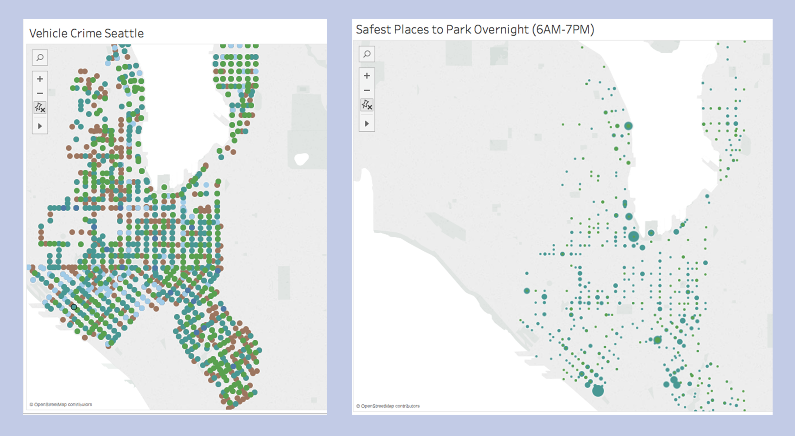
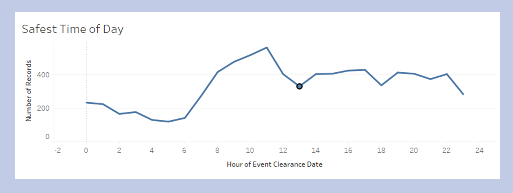

Presented with Seattle crime history data, I was assigned the task to produce a helpful data visualization for an assigned user: a tourist with a car. Overall, our user needed to find out where it would be safe to park and where it is safe to drive. It was challenging to organize and map this information in a way that could be easily understood.
I had to break the goal apart into three questions: Where is there crime at night? When is there least traffic crime during the week? And what time of the day has the least number of accidents? Then using these questions, I created various visualizations to answer them.
I initially wanted to plot the areas where vehicle crime was most prominent in Seattle, but working with a large volume of data made this difficult. The first iteration of the map (left) was cluttered and resulted in an uninformative visualization. Instead, I opted for a map that displayed the density of crime in particular areas (right).
On the refined graph, higher crime rates at a given point in time are displayed as larger circles, making it easier to pinpoint where crime is concentrated and therefore which areas are to be avoided. The title of the graph corresponds with the question I was trying to answer. For the one on the right, avoiding high-crime areas would allow tourists to find the safest places to park overnight.
Additionally, in another visualization, I created a line graph (below) that plotted the number of crimes that occured at particular hours of the day. Those with higher rates of crime were the least safest times of the day. Between the line graph and the dot distribution map, this was less helpful since location is an important aspect of crime. As I learned in the previous visualization, certain areas tend to have more crime than others.
The most challenging part of this visualization was the approach. Given the original information from Seattle's public database, how do I know which data to omit and which to include?
Concerning the ethics of a visualization, I also had to think about the reliability of the data I was using. It had to be complete, accurate, and without bias in order to create an objective visualization and prevent exaggeration of particular features.
If I were to recreate these visualizations, I would rename the axes and provide titles that explicitly described the data. For example, in the line graph, instead of naming the question that it answers (as was required by the assignment this was created for), the title would most likely be along the lines of "Hours of Day Crime is Most Prevalent."